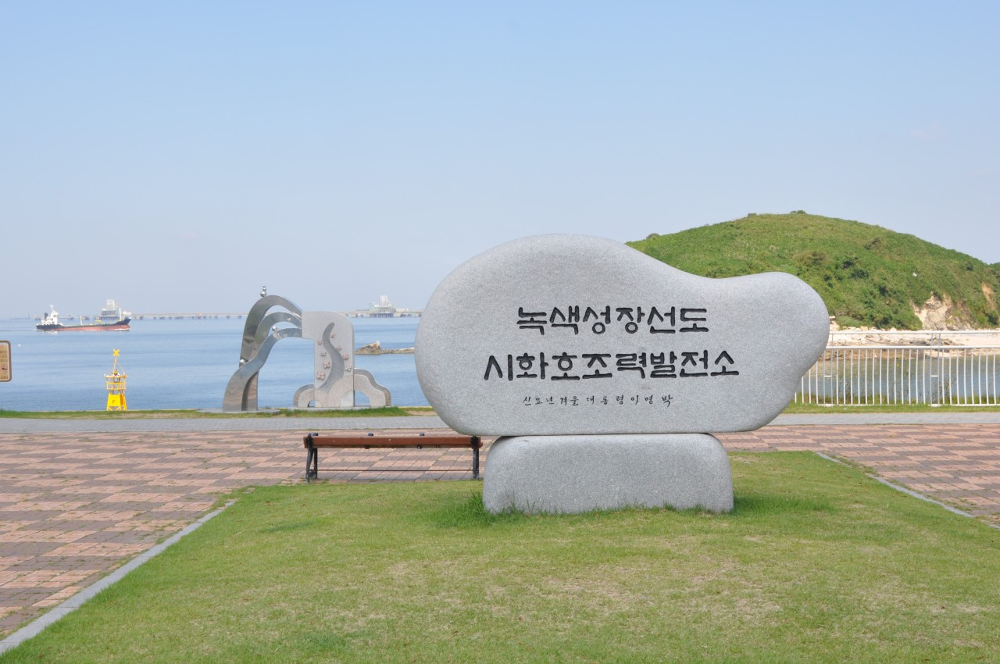

📍 시화나래조력공원, 어떤 곳일까?
시화나래조력공원은 시화방조제 한가운데 위치하며, 바다의 힘으로 전기를 만드는 조력발전소 바로 위에 조성된 해상 공원입니다. 시원하게 트인 서해 바다와 시화호를 동시에 조망할 수 있는 환상적인 위치를 자랑해요.
세계 최대 조력발전소: 거대한 발전 설비를 눈으로 직접 볼 수 있는 흥미로운 장소입니다.
시화나래 휴게소: 공원과 휴게소가 함께 있어 쉬어가기 좋고, 다양한 편의시설을 갖추고 있습니다.
뻥 뚫린 뷰: 동쪽으로는 시화호, 서쪽으로는 서해 바다가 펼쳐져 있어 가슴이 시원해지는 개방감을 느낄 수 있습니다.
✨ 시화나래조력공원에서 꼭 해야 할 3가지
- 🔭 서해를 한눈에! 시화나래 달 전망대: 시화나래조력공원의 상징이자 하이라이트는 바로 높이 75m의 달 전망대입니다! 엘리베이터를 타고 전망대에 오르면, 유리 바닥으로 된 스카이워크 구간이 있어 짜릿한 경험을 할 수 있어요. 이곳에서 바라보는 시화호와 서해의 전경, 그리고 조력발전소의 모습은 그야말로 압권입니다.
- 🌊 잔잔한 바닷바람을 느끼는 산책로: 공원 주변으로 잘 정비된 해상 산책로가 이어져 있습니다. 특히, 시화호 방면으로 난 길을 걸으며 잔잔한 호수 같은 바다를 바라보면 스트레스가 확 풀리는 기분이에요. 피크닉을 즐기기 좋은 잔디밭과 벤치도 곳곳에 마련되어 있습니다.
- 💡 조력발전의 비밀! 조력문화관: 시화나래조력공원에 왔다면 꼭 들러야 할 곳! 조력문화관에서는 조수 간만의 차를 이용해 전기를 만드는 원리와 시화호의 역사를 다양한 체험 전시를 통해 쉽고 재미있게 배울 수 있습니다. 아이들과 함께 방문한다면 교육적인 가치까지 더할 수 있는 최고의 선택이 될 거예요.
🗺️ 위치 및 찾아오시는 길
주소: 경기 안산시 단원구 대부동동 2098
주차: 공영 주차장 완비, 주차료 무료.
대중교통: 안산역에서 123번, 오이도역에서 123번 또는 790번 시내버스를 탑승 후 '시화나래휴게소' 정류장에서 하차.
뻥 뚫린 서해 바다와 신비로운 발전의 원리를 동시에 체험할 수 있는 시화나래조력공원! 이번 주말, 특별한 힐링과 교육을 동시에 잡는 여행을 떠나보시는 건 어떨까요?
← 안산시 대부동동으로 돌아가기